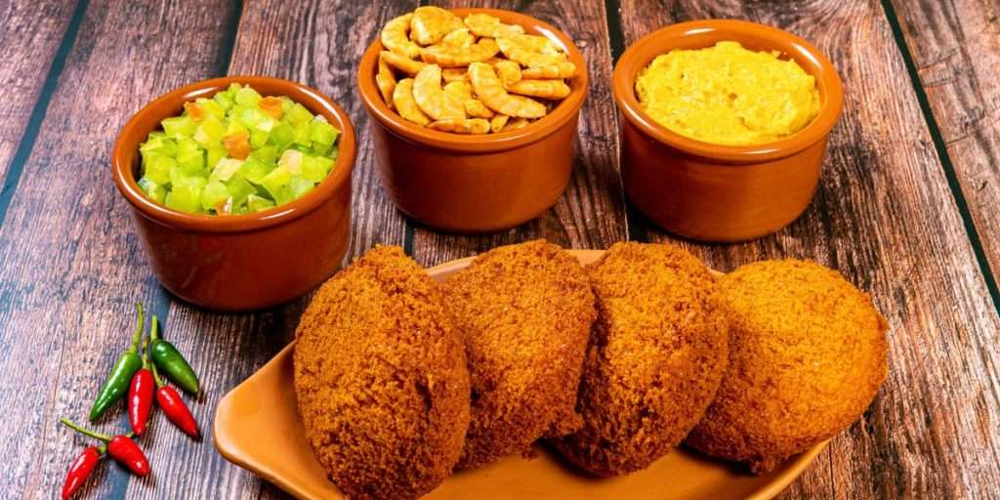

Página principal
Cultura
Pontos turísticos
Culinária
Economia africana
Quiz
Culinária Sul-Africana
A comida típica da África do Sul mistura tradições africanas e europeias.

Pratos tradicionais
Biltong (carne seca temperada)
Bobotie (carne ao forno com especiarias)
Chakalaka (prato picante de legumes)